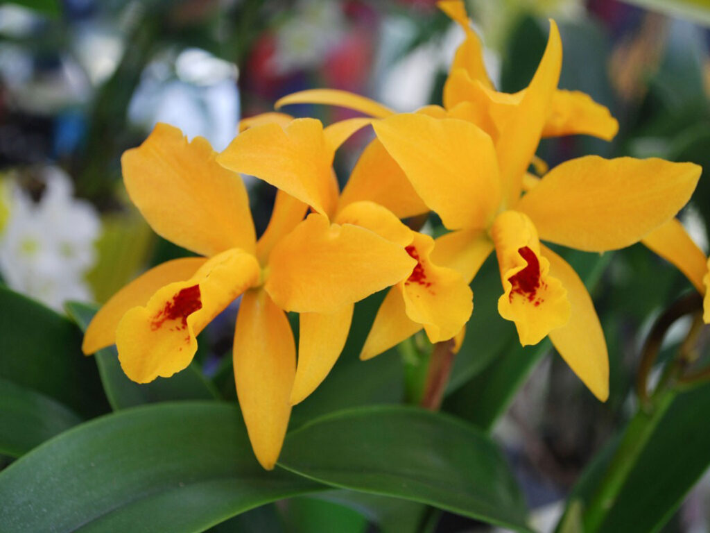
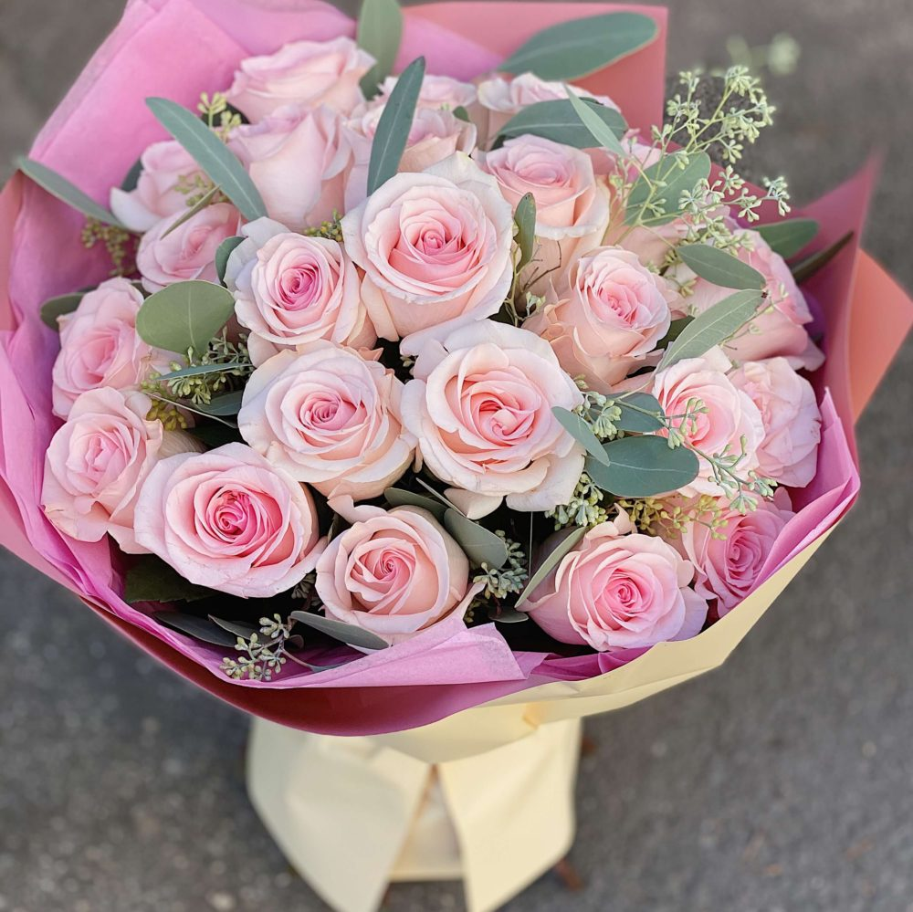
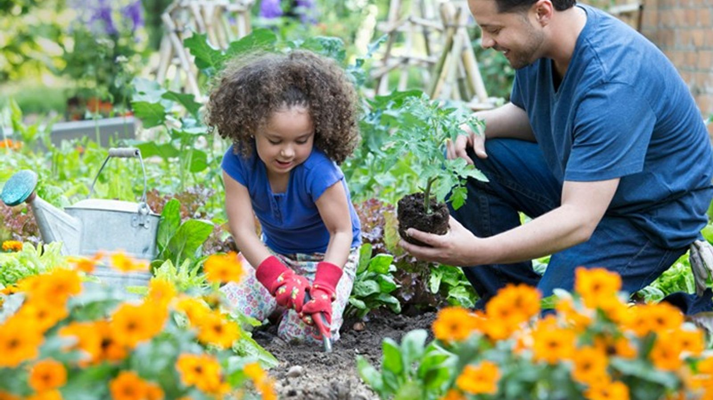

Nuestro Blog
Cuidando orquideas
Las orquídeas amarillas son una de las variedades más populares de esta familia
de plantas. Su color brillante y alegre las convierte en una elección popular para
arreglos florales y jardines, agregando un toque de luminosidad y elegancia.
LEER ENTRADA
Preparando un ramo de rosas
Preparar un ramo de rosas puede ser una tarea delicada y emocionante al mismo tiempo. Seleccionar
las rosas adecuadas, cortar los tallos en ángulo, retirar las hojas inferiores y colocarlas en agua fresca
son pasos importantes para asegurar que el ramo dure el mayor tiempo posible. Además, elegir un
envoltorio y un lazo que complementen el color de las rosas puede hacer que el ramo luzca aún más hermoso.
LEER ENTRADA
La jardinería no solo es una actividad relajante y agradable, sino que también tiene muchos beneficios para la
salud. Al trabajar en el jardín, se realizan actividades físicas que ayudan a mejorar la fuerza muscular, la flexibilidad
y la coordinación. Además, el contacto con la naturaleza y las plantas reduce el estrés y la ansiedad, y puede mejorar
el estado de ánimo y la salud mental en general. Además, cultivar plantas y alimentos en casa también puede tener
beneficios para la salud física, como el consumo de alimentos más frescos y saludables.
LEER ENTRADA